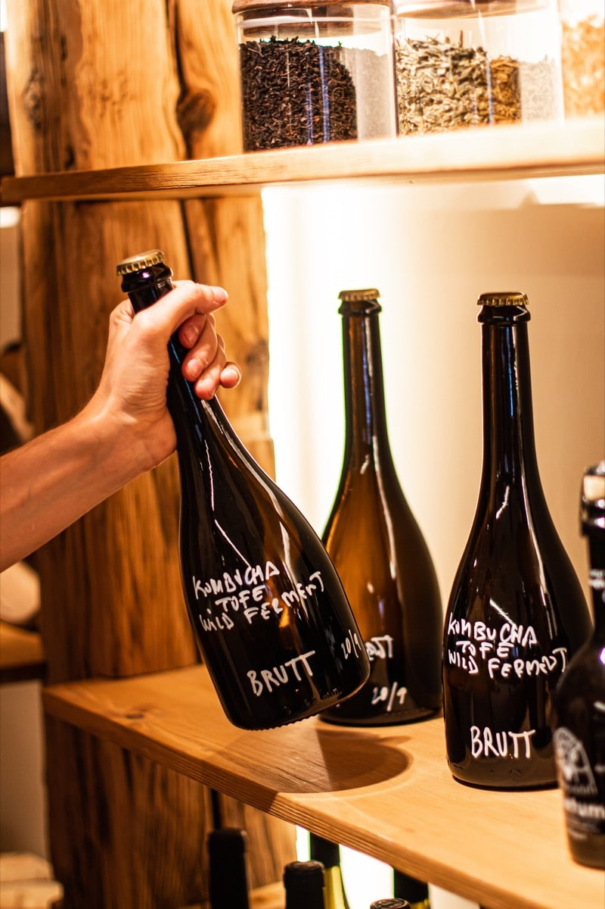

ORIGEN
En Bruto
Café, restaurante, bollería y fermentación.
TEXTO
En Bruto es un café, restaurante, bollería, y lugar de fermentación. En su proceso de fermentación, hacen kombucha para vender pero después tienen cáscaras, SCOBY, que usamos para hacer biomateriales.
